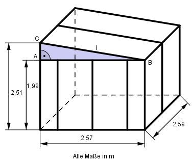

Aufgabe 146 Berechnen Sie das Volumen V des dargestellten Treibhauses. Wie groß ist die Glasfläche A ohne Berücksichtigung der Streben?

Trapezförmiges Prisma: V = G * h 1,99 m + 2,51 m G = ------------------ * 2,57 m = 5,78 m2 2 V = 5,78 m2 * 2,59 m = 15 m3 A = 2 * Trapezfläche + Umfang Glasfläche * h Pythagoras im Dreieck ABC: Dachschräge l2 = 2,572 m2 + (2,51 m - 1,99 m)2 = = 6,87 m2 |√ l = 2,62 m A = 2 * 5,78 m2 + (2,51 m + 1,99 m + 2,62 m) * * 2,59 m A = 11,56 m2 + 18,44 m2 = 30 m2